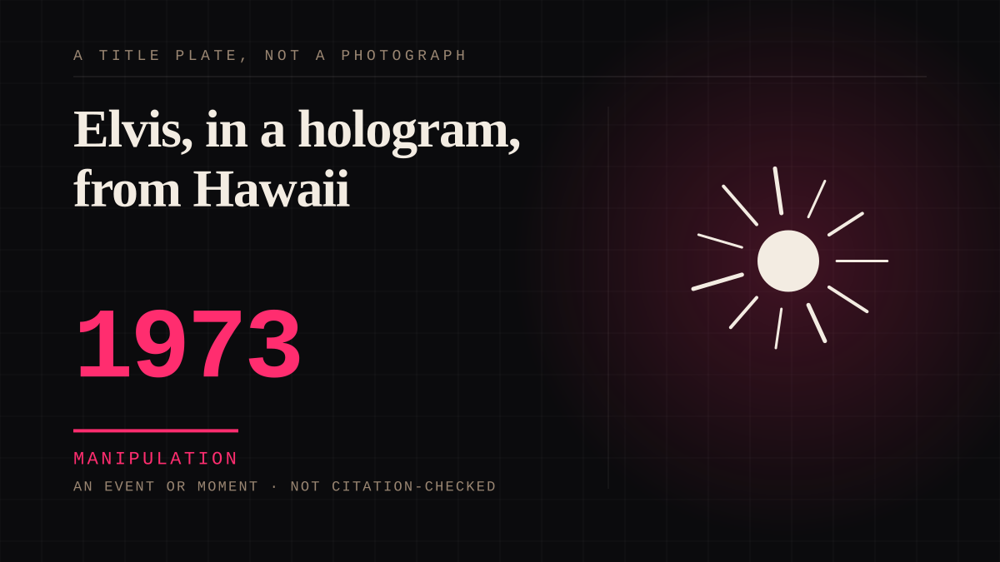

An event or moment · 1973 · Television
Elvis, in a hologram, from Hawaii
Elvis Presley was filmed in a two-dimensional process that placed an apparently three-dimensional Elvis on stage, in a scene where real people were supposed to react to him. Aloha from Hawaii via Satellite reached an estimated half the planet.

The first parasocial technology, and it makes the argument nobody wanted to make. It was simultaneously beloved, a triumph, and a demonstration that you can attach to a projection on purpose. Everything since - deepfakes, holograms, an AI voice reading a dead actor's lines - is a lateral move from here.
Manipulation. One-sided attachment engineered for somebody else's benefit. Paid intimacy, parasocial persuasion, sasaeng, grief extraction, the streak. The lane that pays the bills and the lane that causes the most harm, frequently at the same time.
Consideration. The part where somebody stops and thinks. The research, the diagnosis, the ethics, the lawsuits, the regulators. Roughly fifty years of arguing with itself about whether this is a relationship.
Where it sits
1950 1950-1999 · 1973 1999
Provenance · 1 source record(s)
- unverifiedNo specific claim is recorded against this source. The record is a pointer to the work in general; the entry's own prose is the argument and is not sourced line by line.Aloha from Hawaii via Satellite, 1973
Not yet stood behind. The entry is real. A person has not read the citation and confirmed it, so treat the date as approximate until they do.
Connected · 3 out, 5 in
Reported as a story
It sits in
The full timeline → · The database → · See it in the atlas →